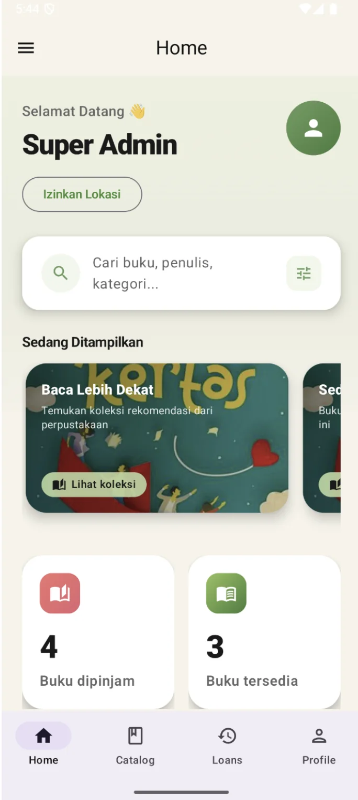
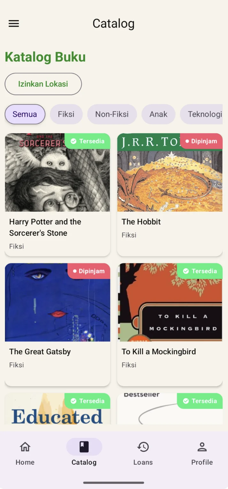
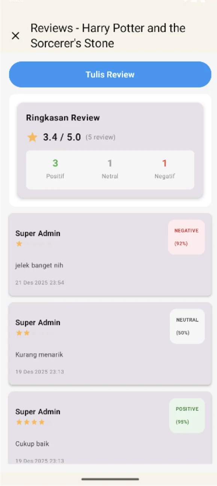
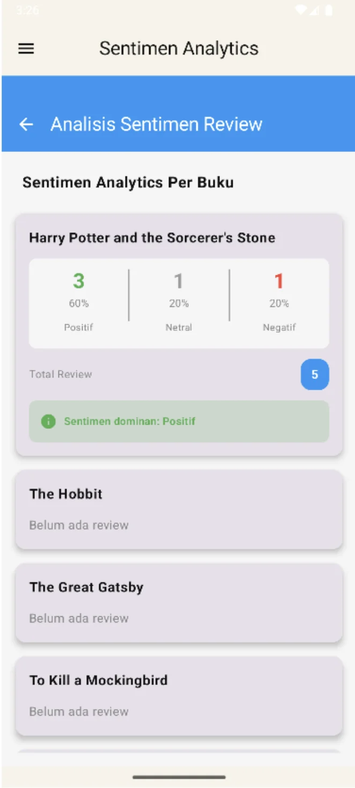

Android / Community library
Pojok Baca
A digital library for discovering, borrowing, and reviewing books, with real-time Firebase data and on-device review sentiment.
- Created
- December 2025
- My role
- Lead Android developer · sentiment analysis
- Focus
- A library shaped around its readers



Digital Library with a Smart Heart
Pojok Baca (Taman Bacaan) is a comprehensive digital library application designed to modernize the reading experience. While it handles core library functions like book discovery, borrowing, and user management, its standout feature is a built-in sentiment analysis engine for book reviews.
Built with a modern Android stack, the app leverages Firebase for real-time data persistence and authentication, ensuring a seamless experience across devices. The goal was to create not just a repository for books, but a community-driven platform where readers can share and understand the collective sentiment of the library's catalog.
Comprehensive Library Management
One-Click Borrowing
Simplified UX allows users to borrow books instantly after authentication.
Proactive Notifications
Automated reminders 3 days before due dates to help readers return books on time.
Barcode Scanner
Admins can add new inventory instantly by scanning ISBN barcodes.
Multi-Level Access
Tailored interfaces for Users, Admins, and Super Admins.
Real-Time Sentiment Analysis
I engineered a custom keyword-based sentiment classification engine that runs entirely on-device. As users type their reviews, the system provides instantaneous feedback, categorizing their sentiment as Positive, Neutral, or Negative with a calculated confidence score.

Real-Time Feedback
On-device keyword classification provides immediate feedback while a review is typed.
Hybrid Storage
Firestore integration for persistent, global sentiment stats.
Jetpack Compose UI
Declarative UI components for dynamic sentiment badges.
Scalable Architecture
Modular design ready for TensorFlow Lite custom models.
App Screenshots
My Role & Contribution
I led the Android implementation, built the on-device keyword-based sentiment engine, and connected the Jetpack Compose interface to Firestore’s real-time data.
My work also covered state management, database structure, and Firestore security rules. The project taught me how to keep review feedback responsive while coordinating authentication, borrowing, and shared library data.
Group Members
Ryann Chandiari
- On-device sentiment engine
- Advanced State Management
- Database Architecture & Security Rules
Aditya Stephen Hung
- UI and UX
- Navigation Setup
- Asset Management
Imanuell Gilland
- Authentication Setup
- CRUD Operations
- Data Seeding
Inosensius Dwi Atmoko
- Manual Testing
- User Flow Validation
- Project Documentation